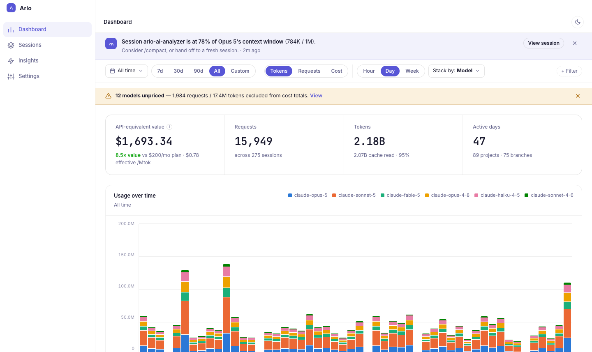
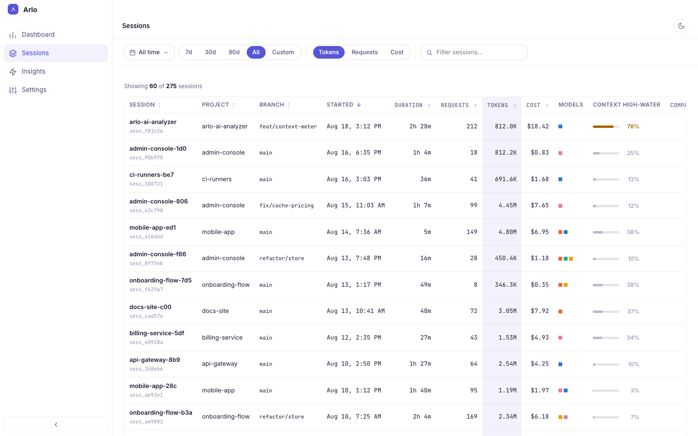
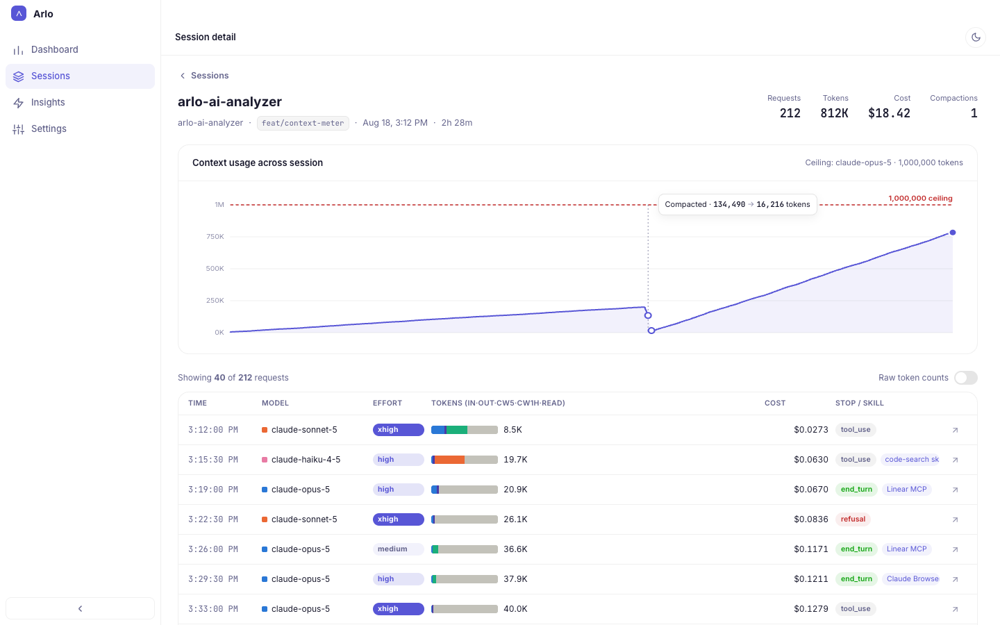
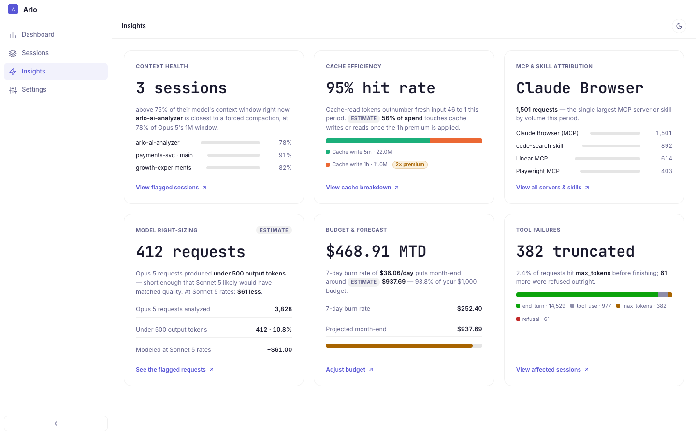
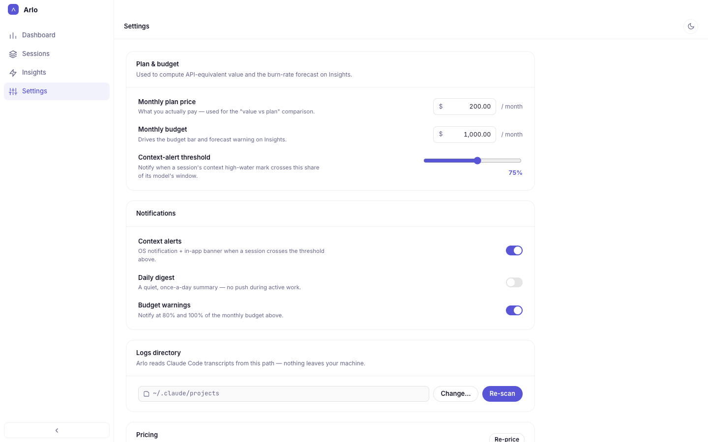

Arlo AI Analyzer reads the Claude Code and Codex CLI logs already on your Mac and turns them into token, cost and context reports — per session, per model, per day. Nothing leaves your machine.

Your transcripts record every request. Arlo AI Analyzer reads them and shows you what they add up to.
Each Claude Code and Codex CLI session with its project, branch, duration, requests, tokens and cost — and how full its context window got.

Open any session to see its context usage request by request, against the model's window as the ceiling, with every compaction marked where it happened.

Six cards that point at the spend you can act on: sessions close to a forced compaction, how much of your traffic the cache absorbs, and which MCP servers and skills drive the most requests.

Tell it what you pay and what you mean to spend. It shows what your usage would cost at API rates, and warns you before a session runs out of context or the month runs out of budget.

No proxy, no API keys, no setup beyond picking a folder.
Claude Code and Codex CLI already write every request to disk. Point Arlo AI Analyzer at those folders and it keeps up as new sessions land.
Claude rates are built in; other models come from a public price list updated daily, and you can add your own price for a self-hosted one. A model with no known price shows “—”, never $0.
Close the window and it stays in the menu bar, with today's spend one click away and an alert when a day runs past the limit you set.
Local-first by design, not by a setting you have to find.